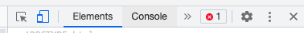

Welcome basket weaver. You have been chosen by the transtemporal wizards to be transported back to 2016. You will have access to the tech of the future. Your task is to build decentralised tech alternatives to help your brothers in 2021 when they will need it.
Your inventory is looking bare and we will need to equip you for this task. The items below will make a fine warrior
Looking dangerous already!
Boxes in green are holy texts you should read
But first some guidance on basic code guidance. Guidance.
Although not used here ``` ``` means code
$ means command line promts
And anything in a gray box will also be code. Usually the file extention will be stated above the code to tell you where to put it i.e. .js , .jsx , .css , .py
Whats the command line? Open up a terminal on your computor, it should be an inbuilt application. It will likely look like a black/ white box with a couple lines of meaningless junk up top. This is where we put our command line promts. What were really doing is coding in a language called BASH
Enter the code beneath in the terminal and see what happens. REMEBER! The $ sign only signals what language this is (BASH) omit it when pluging this code in the terminal.
$ node -v
$ npm -v
That should have printed out some number for you.
Now try the following
$ ls
Look familiar? This will give you your folders beneather your current folder
copy/paste one of the folder names and append it to whats below
$ cd
This will take you to a new foler
You can confirm this with
$ pwd
Now make a new foler with:
$ mkdir animeTiddies
Any issues encountered can be address by the incels at stackoverflow Inshallah.
This episodes soundtrackNow back to our quest - decentralised applications to help our brethren.
The bottom line with keeping our data and information out of the hands of the jannys is:
Were going to use a suite of distributed databases and tools to help us out. Each of these tools being more poorly documented than last.
A tidal wave of surplus chromosomes will embrace us on our journey to build our way out of the global elite's hamsterwheel!
The tools
Lets start writing code.
We'll work with GUN and IPFS(no. no IPFS today)
Enter your terminal and enter the following (remember to omit $)
$ mkdir pel
$ code this MAY open up Bills IDE(dont shit the bed if it doesnt), if it doesnt try see if you can figure it out! I cant be fucked explainingDrag and drop this folder into your code IDE.
Images scroll horizontally (as god intended). Make an ep01 folder then index.html file as shown in last image
Hopefully you got this far. If you have issues look up an introduction for your IDE.
Aight now where were really going to code, we have lives to save.
index.html
Make yours match. The shit that shows up on the page goes in the "body", the shit you dont see goes in "head".
index.html
I want you to update the file by putting the above in the "head"
What magic will this allow for? Put the following in the body (i know what i said, just do it)
index.html
Grooooovy. Take care to get your ({})s right. Try add more data by fiddling around, but leave line 2 alone
Try get the individual primary value
Replace console.log with if your feeling saucy.
Try get a feel for using fuckery.js . link to it with a script with a src="" . Leave gun = Gun() inside html but take the rest to fuckery.
document.write
Time to bring up running code - read whats beneath, save time and effort later on.
To run a html file drag it into the new tab section of your internet browser. Nothing will show up. 1)Right click 2) click inspect 3) click console

You should see
feet
knitting
So whats gun and why did you waste my time? Gun is a database. The data were getting back can(next episode young one) be encrypted then placed on device local storage around the world by use of peers. If the glowies come for me then the data isnt going offline, because you hold it too.
Next time? user systems, encryption, files and confusion.